Table des matières
Visitez la page Configuration système requise pour vous assurer que votre ordinateur répond à la configuration matérielle requise pour installer et exécuter Xubuntu. En général, Xubuntu fonctionnera sur la plupart des ordinateurs (PC ou Mac) construits depuis 2007 et livrés avec un système d'exploitation (système d'exploitation) comme Windows XP et Mac OS X 10.5 ou supérieur.
![[Note]](../../libs-common/images/note.png)
|
|
|
Si vous installez Xubuntu sur un ordinateur portable, il est recommandé de garder votre ordinateur portable branché pendant l'installation, afin d'éviter une coupure de courant soudaine pouvant entraîner une corruption du système. Si vous utilisez Windows 10 et que la technologie RST (Rapid Storage Technology) d'Intel est en cours d'exécution, vous devrez la désactiver avant l'installation. |
Visitez la page de téléchargement pour télécharger l'image ISO de votre édition sélectionnée de Xubuntu. Si vous préférez la stabilité, il est recommandé de télécharger la version LTS (Long Term Support), qui est prise en charge pendant 3 ans. Le fichier ISO peut être téléchargé avec un client BitTorrent, tel que Transmission ou qBittorrent, ou via votre navigateur à partir de l'un des nombreux serveurs miroirs globaux.
Le fichier ISO doit être écrit sur un support de démarrage, comme une clé USB, une carte mémoire SD ou un disque optique DVD.
Si vous disposez d'une clé USB ou d'une carte SD avec 2 Go de stockage ou plus, vous pouvez utiliser l'une de ces applications pour écrire le fichier ISO : Rufus (Windows), Etcher (Windows, Mac, Linux), GNOME Disks ( Gnome utilitaire de disque
Gnome utilitaire de disque
Si vous disposez d'un disque DVD vierge et d'un lecteur graveur de DVD, vous pouvez graver l'ISO avec l'une de ces applications, si votre système d'exploitation ne dispose pas des fonctionnalités intégrées pour le faire : InfraRecorder (Windows), Brasero ( brasero
brasero xfburn
xfburn
Si vous envisagez d'installer Xubuntu à côté d'un système d'exploitation existant, il est recommandé de sauvegarder les données du système d'exploitation existant par mesure de précaution en cas de problème. Vous pouvez sauvegarder les fichiers de données sur une clé USB externe et/ou sur un disque dur secondaire de votre ordinateur.
Certains ordinateurs peuvent nécessiter une configuration supplémentaire avant que le support d'installation Xubuntu puisse être démarré. Veuillez vous référer à cette section si vous ne parvenez pas à démarrer le programme d'installation ou si votre matériel n'est pas correctement détecté.
Avertissement : Il s'agit d'une fonctionnalité informatique avancée qui ne doit être utilisée qu'avec prudence.  F2 et
F2 et  Supprsont des touches habituelles pour accéder aux paramètres du BIOS.
Supprsont des touches habituelles pour accéder aux paramètres du BIOS.
Intel RST
Secure Boot (boot sécurisé) / Windows 8/10 / Fast Boot (boot rapide) / Fast Startup (démarrage rapide)
macOS T.2 securité
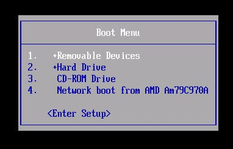
Insérez le support de démarrage dans l'appareil correspondant (la clé USB dans un port USB, la carte SD dans le lecteur de carte SD ou le disque DVD dans le lecteur de DVD) et redémarrez votre ordinateur. Si votre ordinateur est configuré pour démarrer d'abord à partir du support de démarrage de votre choix, celui-ci démarrera automatiquement. S'il ne démarre pas automatiquement, veuillez vous référer à la documentation du fabricant de l'ordinateur pour accéder au menu de démarrage. Cela peut consister à appuyer sur une touche, comme  F12, ou à utiliser un bouton dédié sur l'ordinateur. Dans certains cas, vous devrez peut-être démarrer Windows pour accéder au BIOS. Une fois que vous êtes entré dans le menu de démarrage, sélectionnez le périphérique de support de démarrage approprié.
F12, ou à utiliser un bouton dédié sur l'ordinateur. Dans certains cas, vous devrez peut-être démarrer Windows pour accéder au BIOS. Une fois que vous êtes entré dans le menu de démarrage, sélectionnez le périphérique de support de démarrage approprié.
|
|
|
|
La touche sur laquelle appuyer pour accéder au menu de démarrage de votre ordinateur dépendra du fabricant de l’ordinateur ou de la carte mère. |
Une fois le support de démarrage démarré, un écran vide apparaîtra avec un clavier et des icônes d'accessibilité. À ce stade, vous disposez de 5 secondes pour appuyer sur n’importe quelle touche pour accéder au menu de démarrage du programme d’installation, si vous le souhaitez. Le menu de démarrage présentera dans un premier temps un menu de sélection de langue, suivi d'un menu simple avec des options pour installer ou essayer Xubuntu, tester la mémoire, démarrer à partir du disque dur, ainsi que d'autres options accessibles en appuyant sur les touches  F1 jusqu'à
F1 jusqu'à  F6 keys (pour plus d'informations sur les options des touches Fn,cliquer ici).
F6 keys (pour plus d'informations sur les options des touches Fn,cliquer ici).
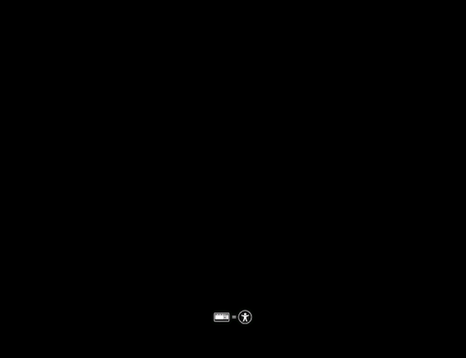
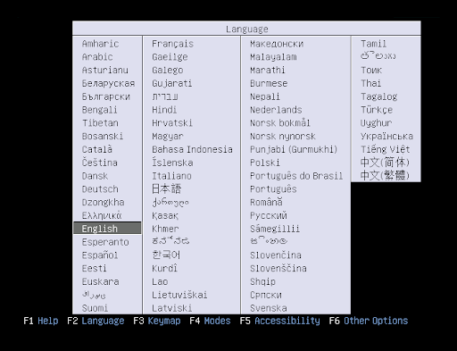
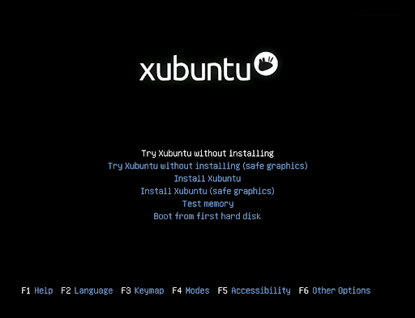
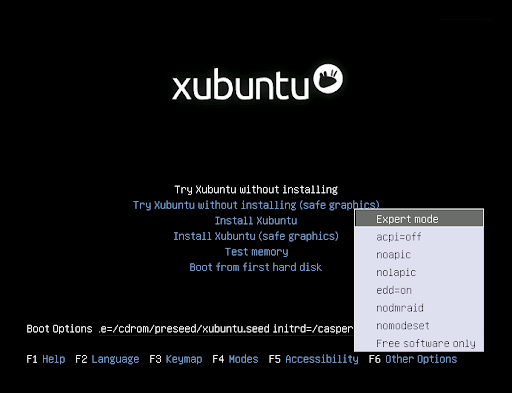
Après l'écran de démarrage initial, les versions de Xubuntu 20.04 et ultérieures vérifient par défaut l'intégrité du support d'installation, qui peut être ignoré en appuyant sur  Ctrl+C. Cette vérification est importante car il est courant qu'un support d'installation corrompu entraîne des échecs d'installation.
Ctrl+C. Cette vérification est importante car il est courant qu'un support d'installation corrompu entraîne des échecs d'installation.
|
|
|
|
Si vous obtenez un écran noir après la vérification d'intégrité, redémarrez votre système et sélectionnez l'une des options graphiques sécurisées (safe graphics) dans le menu GRUB. Cela se produit parfois lorsque les cartes graphiques ne fonctionnent pas correctement avec leurs pilotes open source. Si cela se produit après l'installation avec votre carte graphique NVidia, sélectionnez l'option « Mode de récupération » dans le menu GRUB, puis installez le pilote graphique propriétaire NVidia à partir de l'application Pilotes additionnels. |
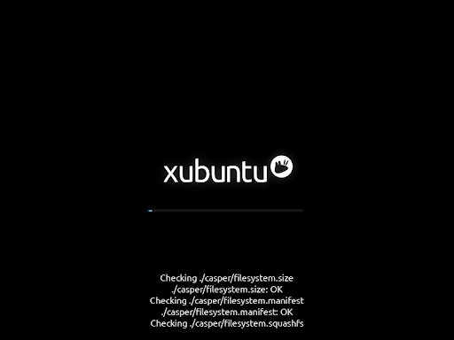
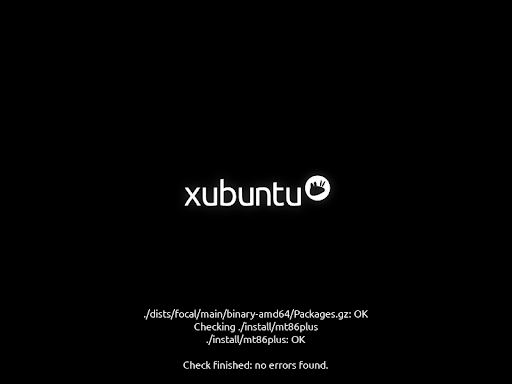
Vous serez accueilli par l’écran de bienvenue du programme d’installation lorsque le programme d’installation démarre. Là, vous pouvez sélectionner la langue du programme d'installation dans la liste de gauche et appuyer sur le bouton pour commencer le processus d'installation.
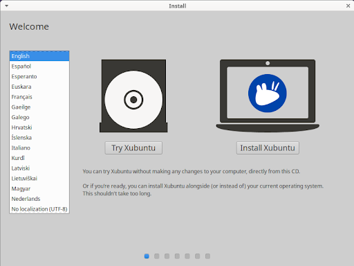
|
|
|
|
Si vous avez sélectionné l'une des entrées Essayer Xubuntu... dans le menu de démarrage du programme d'installation ou le bouton sur l'écran d'accueil, vous pouvez démarrer ou redémarrer le programme d'installation en cliquant sur l'icône du bureau Installer Xubuntu. |
L'écran suivant du programme d'installation sera l'écran de disposition du clavier. Là, vous pouvez sélectionner la disposition de votre clavier, si elle n'a pas été correctement détectée. Si vous n'êtes pas sûr de la disposition de votre clavier, vous pouvez appuyer sur le bouton Détecter la disposition du clavier pour suivre une brève procédure de configuration et vérifier que la disposition fonctionne comme prévu dans le champ de test du clavier. Cliquez sur le bouton Continuer pour continuer.
Si vous n'êtes pas connecté à Internet mais que votre ordinateur dispose du Wi-Fi, vous verrez l'écran Sans fil, depuis lequel vous pourrez soit vous connecter à l'un des réseaux disponibles, soit continuer sans vous connecter.
Après avoir cliqué sur le bouton , vous arriverez à l'écran Mises à jour et autres logiciels. Vous y avez la possibilité de télécharger les mises à jour pendant l'installation, si vous disposez d'une connexion Internet et d'installer ou non des logiciels tiers, comme le pilote de la carte graphique Nvidia et les codecs multimédia pour la lecture de fichiers multimédias. Il est recommandé de les faire vérifier tous les deux.
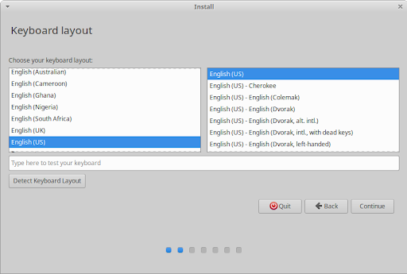
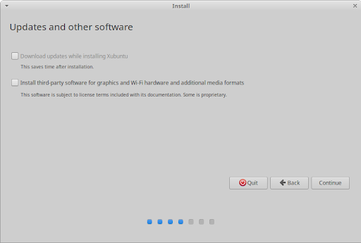
|
|
|
|
Remarque : si a été désactivé ou désélectionné, vous pouvez exécuter l'application Gestionnaire de mises à jour après l'installation. Si n'a pas été sélectionné lors de l'installation, vous pouvez ouvrir la fenêtre Gestionnaire de mises à jour après l'installation, activer le dans l'onglet Logiciels Ubuntu, puis installer les pilotes dans l'onglet Pilotes additionnels pour installer les pilotes. Vous devrez également installer le paquet |
L'écran suivant du programme d'installation est l'écran Type d'installation, dont la liste des options d'installation et de réinstallation varie en fonction du ou des systèmes d'exploitation actuellement installés sur votre disque dur. Il est recommandé aux utilisateurs réguliers de choisir soit Effacer le disque et installer Xubuntu, afin d'effacer complètement le disque et installer Xubuntu comme seul système d'exploitation, soit Installer Xubuntu en plus de [OS], pour créer une configuration à double démarrage avec Xubuntu et un système d'exploitation existant ([OS] est le système d'exploitation existant, par exemple Microsoft Windows XP Professionnel dans la capture d'écran). Les utilisateurs avancés peuvent choisir l'option Autre chose, qui leur donne la possibilité de créer, formater, supprimer et attribuer des partitions.
Si vous choisissez d'installer Xubuntu en plus d'un autre système d'exploitation existant, vous aurez la possibilité d'ajuster la quantité d'espace disque que Xubuntu utilisera, après avoir cliqué sur le bouton .
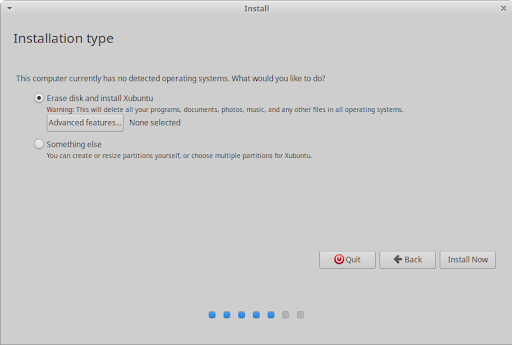
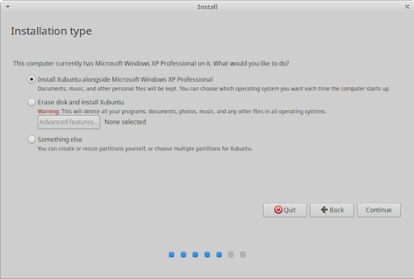
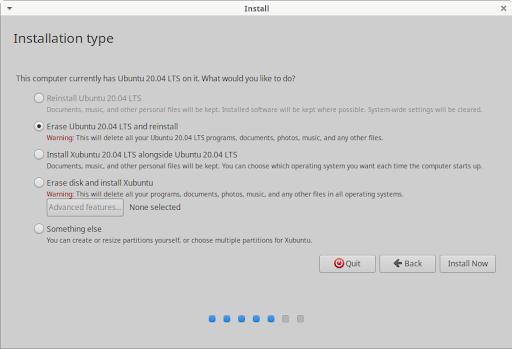
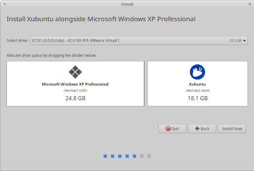
Lorsque vous cliquez sur le bouton , le programme d'installation affichera une boîte de dialogue de confirmation avant d'apporter des modifications irréversibles aux partitions et aux données de votre disque dur. Lisez attentivement les modifications puis, si vous êtes d'accord, cliquez sur le bouton .
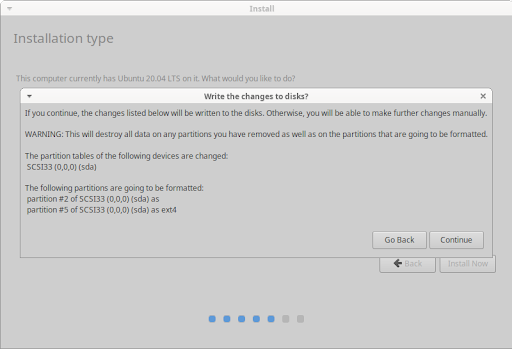
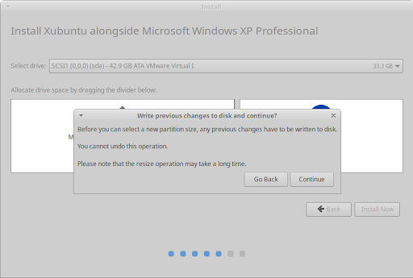
L'écran suivant du programme d'installation sera l'écran Où êtes-vous ?. Là, vous pouvez saisir le nom de la ville ou de la ville dans le champ de texte ou cliquer sur la carte pour sélectionner votre fuseau horaire. Si vous êtes connecté à Internet, votre position sera automatiquement détectée. Cliquez sur le bouton pour poursuivre.
Lors de l'écran Qui êtes-vous ?, une fois que vous aurez entré votre nom, un nom d'ordinateur et un nom d'utilisateur seront automatiquement suggérés. Vous pouvez modifier les deux à votre guise. Le nom de l'ordinateur, également appelé nom d'hôte, est le nom que portera votre ordinateur lorsqu'il apparaîtra sur le réseau, tandis que le nom d'utilisateur sera votre nom de connexion et votre nom de compte.
Ensuite, entrez un mot de passe, qui sera évalué, ceci donnant une note allant de « court », « faible », « passable », « bon » ou « fort ». Un mot de passe fort comporte un minimum de 8 caractères, contenant un mélange de lettres majuscules, de lettres minuscules, de chiffres et de symboles. Il est fortement recommandé d'utiliser un mot de passe fort. Vous avez ensuite la possibilité de choisir si votre ordinateur vous demandera de saisir votre mot de passe pour vous connecter lorsque vous l'allumerez pour la première fois ou s'il se connectera automatiquement. Vous devrez toujours saisir votre mot de passe si vous verrouillez votre ordinateur ou si l'écran expire en raison d'une inactivité.
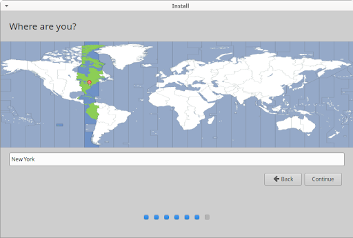
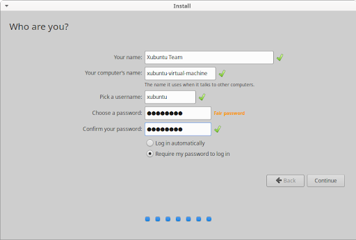
Le programme d'installation va maintenant commencer à installer Xubuntu en arrière-plan. Pendant ce temps, les diapositives d'installation vous en apprendront un peu plus sur Xubuntu, ses canaux d'assistance et sa communauté.
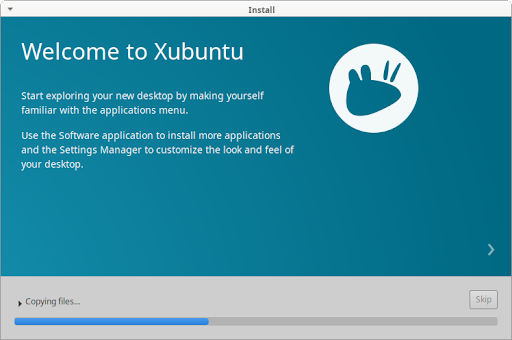
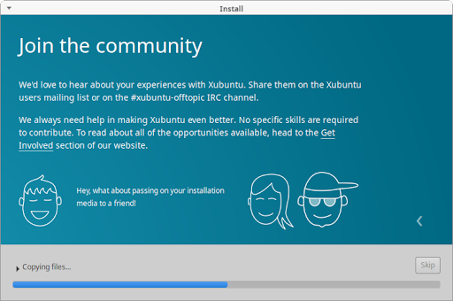
Une fois que tous les fichiers ont été copiés sur le disque dur et que les configurations ont été définies, une fenêtre de dialogue apparaîtra vous demandant de redémarrer l'ordinateur. Cliquez sur le bouton et vous serez invité à supprimer le support d'installation et à appuyer sur  Entrée pour redémarrer.
Entrée pour redémarrer.
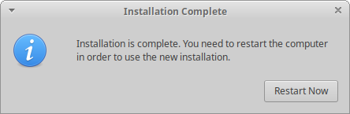
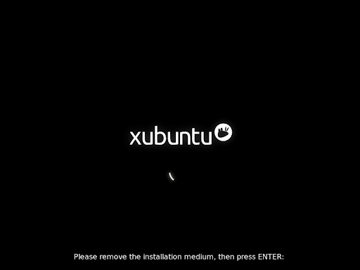
Toutes nos félicitations ! Vous avez installé Xubuntu avec succès et il est maintenant temps de commencer à en profiter. Une fois l'ordinateur redémarré, soit vous serez automatiquement démarré dans Xubuntu et verrez l'écran de connexion, soit, si plusieurs systèmes d'exploitation sont installés sur votre disque dur, le menu de démarrage GRUB, qui vous permet de choisir entre démarrer Xubuntu ou un autre système d'exploitation installé.
 |
 |
|
| Chapitre 1. Qu'est-ce que Xubuntu ? |

|
Chapitre 3. Introduction |